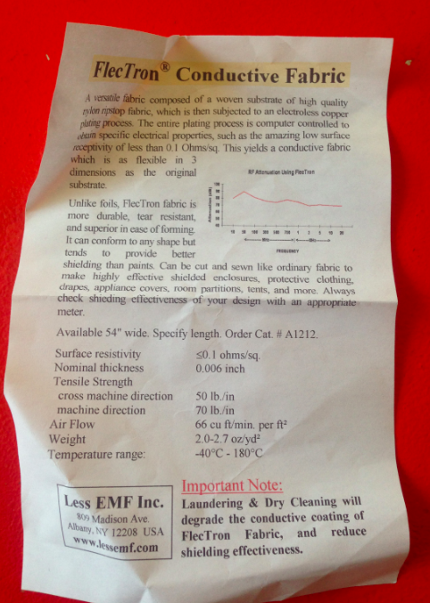

slow electronics
Dans la continuité de 0.camp à Nantes, nous (collectif 0R) fabriquons pour le woot.devices.2 un petit circuit textile electronique musical (à base de 555 - apc style) en utilisant non pas une plaque FR1 rigide mais du tissu conducteur à base de nylon cuivré par electroplating (flectron) dont la forme sera découpée non pas avec une découpe laser mais par dégradation chimique du cuivre par une solution de vinaigre et de sel.
A Nantes nous avions déjà réussi à oxyder du Cu par de l'eau de mer (achetée au litre ! ) et du soleil par le principe ancestral de l'athanor, four cosmique alchimique. Nos résultats après un mois d'immersion étaient encourageant (notez la belle couleur bleue de l'oxyde de cuivre en solution).
Sur la base du design d'une APC, nous avions en parallèle fabriqué des petits circuits sonores. Ils étaient tout rigides, nous les avons donc refait (mrt1) en version textile électronique (le but étant d'en faire une plateforme de prototypage électroextile - textilo) à l'aide de fil conducteur et d'une découpe laser.
Afin de permettre à des personnes qui n'ont pas de découpe laser de refaire le circuit, nous réflechissons pour le woot.devices.2 à des alternatives. Nous en voyons trois:
- Découper au ciseau à la main ou avec un plotter le circuit
- Etcher le circuit à l'aide d'un procédé chimique ou électrochimique.
- Electroplater le circuit
Dans le temps contraint d'une journée (samedi 6 juin 2015) nous avons choisi d'explorer la deuxième solution. Nous avons donc imprimé au laser un circuit sur du flectron contrecollé sur du papier A4 puis tenté d'etcher la board dans du vinaigre et du sel.
composant (NE555)
Le 555 souvent dénommé NE555 est un composant très ancien mais très sympa pour faire des timers (fait un truc toutes les 7 secondes) ou, si on lui connecte une patte sur une autre faire des oscillateurs astables par feedback, et donc, si ça résonne assez vite et qu'on lui branche un haut-parleur, faire du son. Son concepteur (Hans Camenzind) décédé en 2012 est (fut) également l'auteur d'un très bon livre d'introduction à l'électronique, dans le même genre que Forrest Mims.
La datasheet (feuille qui explique) du NE555 ici.
Le footprint de la version DIP (dual-in-line package) c'est à dire avec 8 pattes. Notez que les dimensions sont en inches et entre parenthèses en mm.
circuit (APC)
J'ai pris celui de l'APC (atari punk console) de Jimmy P Rodgers, collaborateur régulier de Mitch Altman créateur de NoiseBridge à SF. L'APC est un grand classique, en gros, c'est une des microvariantes avec des gros boutons (knobs) du circuit de démo dans la datasheet du NE555.
Une précision: ce circuit est ici en Single Sided (toutes les traces sur un seul coté) pour nous aider à fabriquer un truc que d'un coté, sans percer, juste en connectant (normalement en soudant mais dans notre cas en liant avec du textile) les composants sur le même plan, la même surface.
textile conducteur (flectron)
Le flectron est un grand classique du textile electronique. Originalement destiné à faire du shielding (de la protection) pour les personnes qui travaillent dans des milieux à forte radiation électromagnétique, il est aussi utilisé pour fabriquer des antennes, des bonnets anti-abduction par les extra-terrestres et aussi des vêtements électroniques car c'est un très bon conducteur.
Voici sa datasheet (acheté chez LessEMF aux USA)

process papier/textile collé imprimé laser
Audrey (?) de Data Paulette à inventé ce process un peu punk mais très original qui consiste à coller du textile sur du papier qu'on met dans l'imprimante pour faire des imprimés textiles sur des lasers (comme celle de la blackboule) ou des jets d'encre.
Nous reprenons ici le même principe avec de la colle en spray qu'il ne faut pas trop respirer (j'ai eu des vertiges pendant une heure mais peut être était-ce à cause d'autre chose...°). Je l'ai collé directement sur le papier puis appliquer le flectron que j'avais coupé à l'arrache (et comme Maurin me l'a dit après, vu que ça coute cher, j'aurais pu en mettre moins, cqfd).
Voici le résultat :
oxydation du cuivre par du sel et du vinaigre
Mais combien de temps faudra-t-il attendre ?